Analytical briefings, interactive data tools, datasets, and primary source collections for researchers and policymakers working on Russian occupation mechanisms, civilian entrapment, and accountability.

TOT Insights is a research platform of the Ukraine and Russia Programme at the Centre for Statecraft and National Security, King's College London. It publishes analytical briefings, interactive data tools, datasets, and primary source collections on Russian occupation mechanisms, civilian entrapment, and accountability in Russian-occupied Ukrainian territories.
TOT Insights draws on original fieldwork in Ukraine, occupation administrative records, and open-source monitoring to support researchers, policymakers, and accountability practitioners working on the temporarily occupied territories. The platform is updated on a rolling basis as new research, data, and primary sources become available.